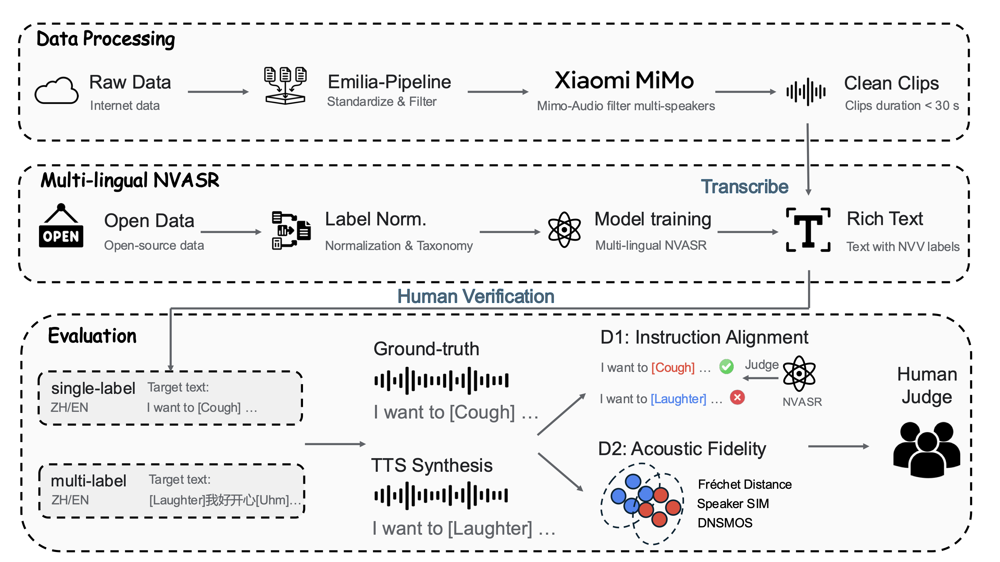

Benchmarking Nonverbal Vocalization Synthesis
in Expressive Text-to-Speech Models
While recent text-to-speech (TTS) systems increasingly integrate nonverbal vocalizations (NVVs), their evaluation lacks standardized metrics and reliable ground truth references. To bridge this gap, we propose NV-Bench, the first benchmark grounded in a functional taxonomy that treats NVVs as communicative acts rather than acoustic artifacts. NV-Bench comprises 1,651 multilingual, in-the-wild utterances with paired human reference audio, balanced across 14 NVV categories. We introduce a dual-dimensional evaluation protocol: (1) Instruction Alignment, which utilizes our proposed Paralinguistic Character Error Rate (PCER) to assess controllability, (2) Acoustic Fidelity, which quantifies the distributional gap between synthesized and real speech. We evaluate diverse TTS models and develop two reference baselines. Experimental results demonstrate a strong correlation between our objective metrics and human perception, establishing NV-Bench as a standardized evaluation framework.

Figure 1. Overview of the NV-Bench pipeline — from raw data collection through multi-lingual NVASR transcription to dual-dimensional evaluation.
Listen and compare: each example provides a prompt audio (reference speaker), the target text with NVV tags, ground-truth recording, and synthesized outputs from five TTS systems.
NVVs are organized into three functional levels based on communicative intent.
Biological reflexes grounding speech in physical realism.
Valenced vocalizations conveying emotion or instant reactions.
Interaction-management cues — filled pauses and prosodic particles.
565K clips (~1,560 hrs) filtered via Emilia-Pipeline & MiMo-Audio for single-speaker verification.
SenseVoice-Small fine-tuned on 6 datasets with unified label taxonomy.
10 annotators, Cohen's κ > 0.85 → 1,651 prompt-GT pairs (7.9 hrs).
Can the model generate the specified NVV events at the correct positions?
How realistic is the synthesized speech compared to real recordings?
Strictly balanced — exactly one NVV event per utterance (50 samples per category). Isolates fundamental generation capabilities.
Challenging utterances with 2+ NVV events — tests robustness under dense paralinguistic conditions with relative balance.
| Dataset | Language | Testset | Balance | Prompt |
|---|---|---|---|---|
| SynParaSpeech | ZH | ✗ | — | — |
| NVS | ZH / EN | ✗ | — | — |
| Emilia-NV | ZH | ✗ | — | — |
| NVTTS | EN | ✓ | ✗ | ✗ |
| SMIIP-NV | ZH | ✓ | ✗ | ✗ |
| NV-Bench (Ours) | ZH / EN | ✓ | ✓ | ✓ |
| Language | Vegetative Sounds | Affect Bursts | Conversational Grunts |
|---|---|---|---|
| Mandarin | Breathing, Cough, Sigh | Laughter, Surprise-ah, Surprise-oh, Dissatisfaction-hnn | Uhm, Confirmation-en, Question-ei, Question-ah, Question-en, Question-oh |
| English | Breathing, Cough, Sigh | Laughter, Surprise-oh | Uhm, Question-huh |
NV-CV3 achieves the lowest PCER (27.69%) on the single-label Mandarin subset.
NV-FlexiVoice achieves the lowest FAD (0.29) and FD (2.72), closest to real distribution.
IMOS shows significant correlation with PCER (ρ = −0.65, p < 0.001), confirming reliability.
10 annotators rated 50 utterances per model on a 5-point scale for IMOS (Instruction Accuracy) and NMOS (Naturalness).
| System | FAD ↓ | FD ↓ | IMOS ↑ | NMOS ↑ |
|---|---|---|---|---|
| GT (Human) | — | — | 4.39 ± 0.18 | 4.39 ± 0.15 |
| Orpheus-TTS | 5.71 | 24.49 | 3.27 ± 0.23 | 3.53 ± 0.22 |
| SMIIP-NV-CV2 | 1.32 | 6.71 | 3.28 ± 0.22 | 3.28 ± 0.19 |
| Emilia-NV-CV2 | 1.08 | 5.57 | 3.89 ± 0.18 | 3.99 ± 0.14 |
| CosyVoice3 | 0.90 | 9.46 | 3.56 ± 0.22 | 3.94 ± 0.20 |
| NV-FlexiVoice | 0.29 | 2.72 | 3.94 ± 0.23 | 4.00 ± 0.18 |
| NV-CV3 | 0.86 | 3.94 | 3.95 ± 0.18 | 4.08 ± 0.16 |
Bold = best, underline = second-best. ↓ lower is better, ↑ higher is better.
| System | Single-label Alignment | Single-label Fidelity | Multi-label Alignment | Multi-label Fidelity | ||||||
|---|---|---|---|---|---|---|---|---|---|---|
| CER% | PCER% | OCER% | SIM | DNSMOS | CER% | PCER% | OCER% | SIM | DNSMOS | |
| GT | 3.86 | 9.38 | 4.07 | 0.781 | 3.12 | 3.79 | 23.71 | 5.07 | 0.794 | 3.12 |
| Orpheus-TTS | 11.36 | 88.77 | 13.91 | — | 3.43 | 19.83 | 84.85 | 24.38 | — | 3.40 |
| SMIIP-NV-CV2 | 8.80 | 75.64 | 11.34 | 0.719 | 3.22 | 10.66 | 77.20 | 14.79 | 0.715 | 3.07 |
| Emilia-NV-CV2 | 5.05 | 40.00 | 6.64 | 0.740 | 3.21 | 5.54 | 48.74 | 8.09 | 0.746 | 3.24 |
| CosyVoice3 | 3.85 | 57.69 | 5.86 | 0.764 | 3.30 | 4.75 | 61.94 | 8.26 | 0.715 | 3.31 |
| NV-FlexiVoice | 6.98 | 31.08 | 8.15 | 0.748 | 3.22 | 8.20 | 39.37 | 10.39 | 0.750 | 3.07 |
| NV-CV3 | 3.80 | 27.69 | 4.90 | 0.768 | 3.29 | 3.44 | 30.04 | 4.84 | 0.776 | 3.29 |
Bold = best, underline = second-best.
| System | Single-label Alignment | Single-label Fidelity | Multi-label Alignment | Multi-label Fidelity | ||||||
|---|---|---|---|---|---|---|---|---|---|---|
| CER% | PCER% | OCER% | SIM | DNSMOS | CER% | PCER% | OCER% | SIM | DNSMOS | |
| GT | 6.73 | 8.31 | 6.90 | 0.772 | 3.11 | 7.26 | 21.41 | 8.62 | 0.775 | 3.14 |
| Orpheus-TTS | 9.03 | 71.92 | 10.63 | — | 3.33 | 8.68 | 71.46 | 11.89 | — | 3.34 |
| SMIIP-NV-CV2 | 17.92 | 56.80 | 19.47 | 0.583 | 2.97 | 20.93 | 54.49 | 23.87 | 0.580 | 2.97 |
| Emilia-NV-CV2 | 12.50 | 55.30 | 13.21 | 0.639 | 3.21 | 11.71 | 60.28 | 14.63 | 0.655 | 3.26 |
| CosyVoice3 | 7.87 | 62.75 | 9.06 | 0.701 | 3.27 | 6.39 | 57.84 | 10.69 | 0.715 | 3.31 |
| NV-FlexiVoice | 11.88 | 50.43 | 13.21 | 0.685 | 3.15 | 9.60 | 51.32 | 13.76 | 0.708 | 3.07 |
| NV-CV3 | 8.33 | 46.13 | 9.44 | 0.698 | 3.24 | 6.70 | 47.13 | 10.10 | 0.721 | 3.30 |
Bold = best, underline = second-best.
Our NVASR model maintains high-quality general ASR while significantly outperforming baselines on NVV-specific tasks.
| Dataset | SenseVoice | Qwen2.5-Omni | NVASR (Ours) |
|---|---|---|---|
| WenetSpeech test-net | 5.77 | 20.14 | 5.55 |
| LibriSpeech test-other | 12.79 | 23.35 | 9.90 |
| SMIIP-NV | 3.12 | 3.59 (4.17) | 1.29 (1.36) |
| NVTTS | 14.45 | 21.69 (26.95) | 13.52 (16.10) |
Values in parentheses denote OCER. All other values are CER (%).